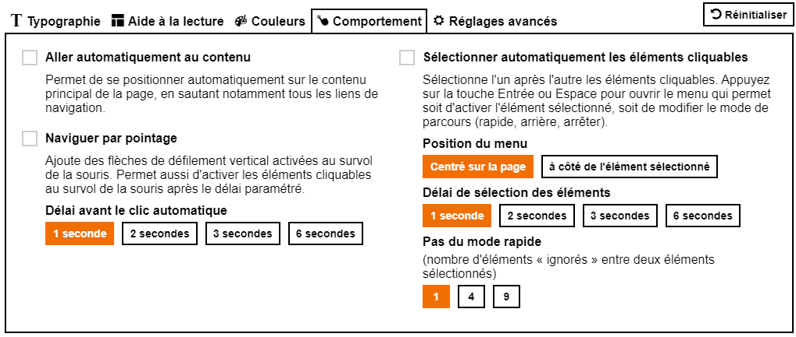

Le service Orange Confort+
Le service Orange Confort+
Orange Confort+ : une solution OpenSource pour améliorer le confort de tous et mettre en valeur les sites web accessibles!
Ce service offre une vingtaine d’options pour adapter les sites Web à votre besoin : que vous ayez des déficiences
visuelles ou une simple fatigue, des problèmes de reconnaissance des mots pour des raisons de dyslexie ou autres,
de la difficulté à utiliser une souris ou que vous ne sachiez pas comment paramétrer votre ordinateur, Orange
Confort+ vous apporte des solutions : un paramétrage à réaliser une fois et tous les sites Web prendront en compte
vos préférences
Orange Confort+ est une extension pour navigateur à télécharger gratuitement, disponible sur Firefox, Chrome, et
Internet Explorer 11

A qui s’adresse le service Orange Confort+
Le service Orange Confort+ a été créé par Orange. Il offre une aide importante aux utilisateurs ayant un handicap moteur,
visuel ou cognitif (dyslexie par exemple), et améliore l'expérience utilisateur pour tous. Qui n’a pas souhaité en
fin de journée pourvoir augmenter la taille des polices ou le contraste de couleur sur un site web ?
Notre démarche de conception centrée utilisateurs a permis de concevoir une interface claire et facile à prendre en main.
Les réglages ont été étudiés pour répondre aux besoins du plus grand nombre, sans impacter les performances.
Ce service est fondé sur un principe essentiel : on ne peut pas catégoriser, simplement, les préférences d’un utilisateur face à un site web en fonction d’une typologie prédéfinie, qu’il soit en situation de handicap ou non. Le service offre donc une souplesse au niveau de la personnalisation des réglages, pour permettre à un utilisateur de choisir lui-même les réglages qui lui conviennent le mieux.
Pour améliorer l’expérience utilisateur et faciliter sa prise en main, le service Orange Confort+ propose la visualisation en temps réel des réglages. Ainsi, l’utilisateur peut très vite trouver et appliquer les réglages optimaux vis-à-vis de ses besoins. Le service est disponible en Français, Anglais et Espagnol. La langue d’affichage par défaut est celle du site visité, et peut être personnalisée.
Le service garantit la préservation du contenu informatif, toutes les informations présentes sur la page web restent disponibles lorsque le service est activé.
Notre démarche de conception centrée utilisateurs a permis de concevoir une interface claire et facile à prendre en main.
Les réglages ont été étudiés pour répondre aux besoins du plus grand nombre, sans impacter les performances.
Ce service est fondé sur un principe essentiel : on ne peut pas catégoriser, simplement, les préférences d’un utilisateur face à un site web en fonction d’une typologie prédéfinie, qu’il soit en situation de handicap ou non. Le service offre donc une souplesse au niveau de la personnalisation des réglages, pour permettre à un utilisateur de choisir lui-même les réglages qui lui conviennent le mieux.
Pour améliorer l’expérience utilisateur et faciliter sa prise en main, le service Orange Confort+ propose la visualisation en temps réel des réglages. Ainsi, l’utilisateur peut très vite trouver et appliquer les réglages optimaux vis-à-vis de ses besoins. Le service est disponible en Français, Anglais et Espagnol. La langue d’affichage par défaut est celle du site visité, et peut être personnalisée.
Le service garantit la préservation du contenu informatif, toutes les informations présentes sur la page web restent disponibles lorsque le service est activé.
Réglages offerts par le service
-
Typographie
Agrandissement des caractères, modification de la police d'affichage et de l'espacement dans le texte : utile aux utilisateurs dyslexiques, ayant des difficultés de vision, ou tout simplement sujet à la fatigue visuelle.
-
Agencement
Modification de la mise en page, affichage d’une règle de lecture : utile principalement aux malvoyants et déficients cognitifs qui ont du mal à repérer les informations dans la page, ainsi qu'aux déficients moteurs qui ne peuvent utiliser la souris ou qui naviguent uniquement au clavier.
-
Couleurs
Choix dans une palette personnalisée de la couleur du texte et du fond de la page.
-
Comportement

La navigation par pointage
Cette aide est très utile pour des utilisateurs qui se trouvent dans l'impossibilité d'exercer une pression sur la souris ou sur le clavier. Affiche un ascenseur pour faire défiler la page en passant, au survol, la souris au-dessus des deux flèches haut/bas, sans avoir besoin de cliquer. Et lorsque la souris est au-dessus d’un élément cliquable de la page, par exemple un lien, celui-ci s'active au bout d'un délai prédéfini par l'utilisateur : 1 seconde, 2 secondes, etc.La navigation par sélection automatique des éléments
Cette aide est fondamentale pour les utilisateurs qui ne peuvent faire usage de la souris, mais seulement exercer une pression sur une touche du clavier. Parcourt de façon automatique tous les éléments cliquables de la page ainsi que tous les formulaires. L'appui sur les touches Espace ou Entrée du clavier ouvre un menu contextuel qui permet au choix : d'activer l'élément sélectionné, de continuer le parcours de la page, de passer en mode navigation rapide (2 éléments par 2 ou 5 par 5, etc.), ou de naviguer en arrière.
Vous êtes développeur? Vous souhaitez intégrer Orange Confort+ dans vos pages?
Le service est peu intrusif, il s’intègre sous forme de lien dont vous pouvez personnaliser l’apparence et la position dans
la page.
Lors de l’activation du service par un utilisateur, la barre de réglages du service vient s’insérer en haut de la page, en décalant le contenu de celle-ci vers le bas.
Le service peut être utilisé sur tous les sites, cependant pour que le service fonctionne de façon optimale, il est préférable que votre site respecte les recommandations d’accessibilité WCAG 2.0 ou RGAA 3.0.
Dans votre site, l'ajout du service Orange Confort+ est réalisé par la simple inclusion d’un fichier JavaScript dans votre code HTML
Lors de l’activation du service par un utilisateur, la barre de réglages du service vient s’insérer en haut de la page, en décalant le contenu de celle-ci vers le bas.
Le service peut être utilisé sur tous les sites, cependant pour que le service fonctionne de façon optimale, il est préférable que votre site respecte les recommandations d’accessibilité WCAG 2.0 ou RGAA 3.0.
Dans votre site, l'ajout du service Orange Confort+ est réalisé par la simple inclusion d’un fichier JavaScript dans votre code HTML
Le fichier Javascript du service Orange Confort+ doit être hébergé sur un serveur. Ce serveur peut être celui de votre site, ou un serveur distant hébergé par un partenaire (sur un autre domaine). Si vous faites le choix d’utiliser un serveur distant hébergé par un partenaire, l’utilisateur du service Orange Confort+ retrouvera ses réglages sur tous les sites utilisant ce serveur.
Orange Confort+ utilise la Police OpenDyslexic
Orange Confort+ utilise la Police Luciole © Laurent Bourcellier & Jonathan Perez Licence CC-BY